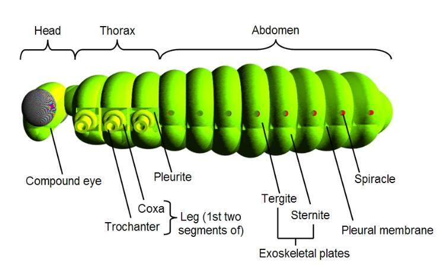
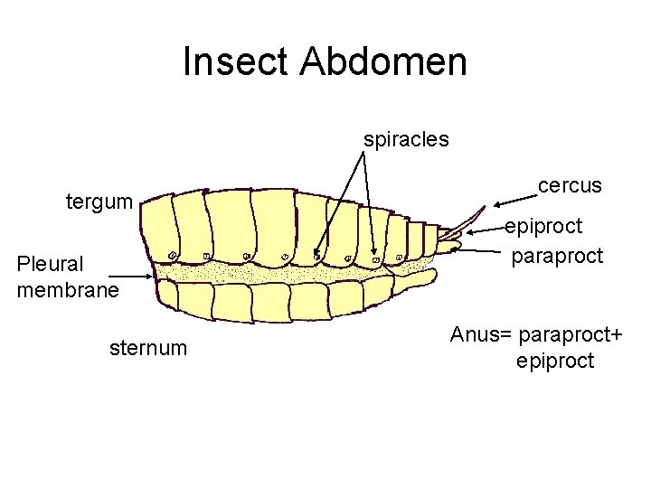
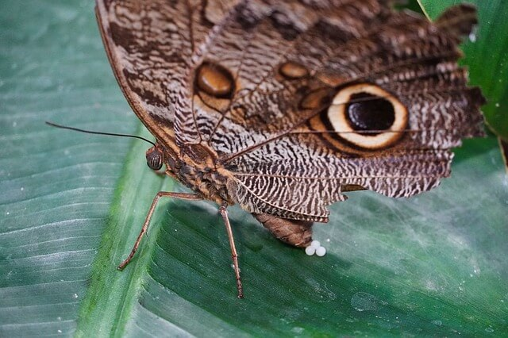
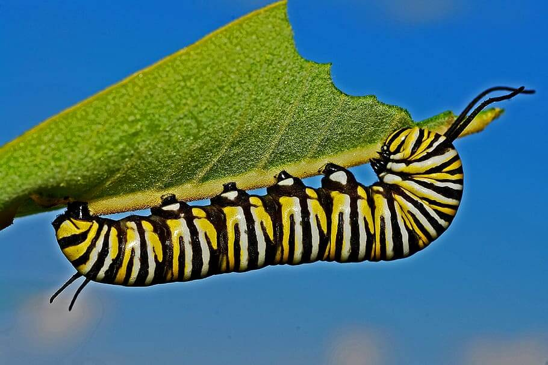
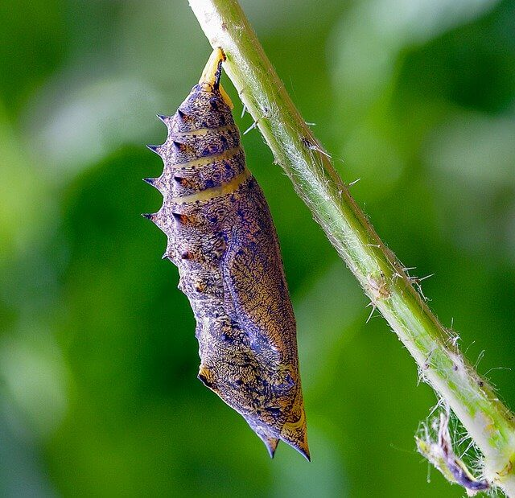
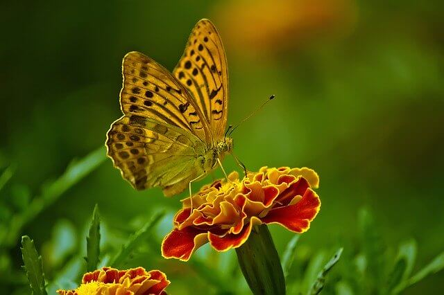
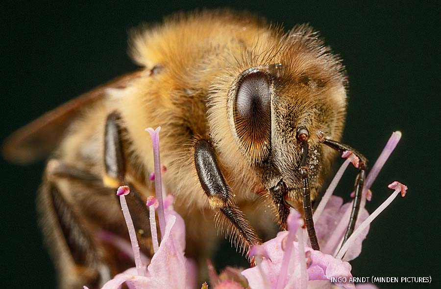
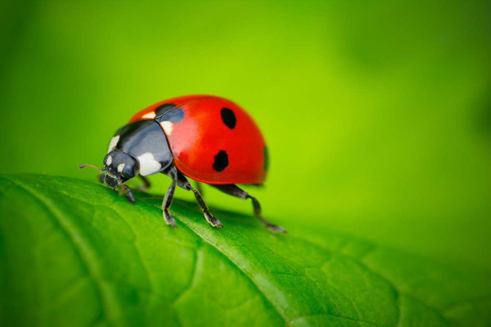
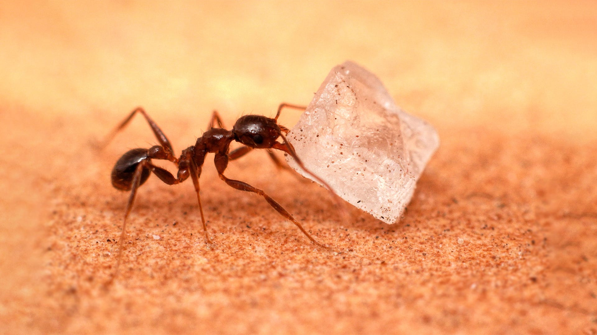

About Insects
Insects are the largest group in the animal kingdom.
- Insects help us by pollinating our crops,
- decomposing organic matter,
- helping scientists to find cures for diseases,
- and even by giving clues to detectives solving crimes
- some insects spread disease or damage plants and structures
Most insects have similar anatomy. 'Anatomy!' It refers to what a body is made of, whether we're talking about human anatomy - two eyes, two ears, two arms, two legs, and so on - or insect anatomy, which is way different!
Parts on an INSECT
HEAD - Eyes, mouth parts, antennae

THORAX - wings, legs, and muscles that control motion
ABDOMEN - contains their vital organs
The Insect Lifecycle
Some insects like the butterfly have a four stage lifecycle (called complete metamorphosis):
- egg
- larva
- pupa
- adult
Let’s talk about these stages using a butterfly as our example:
The Egg Stage
Butterfly eggs are fixed to a leaf with a special glue which hardens rapidly. This is the same glue is made by the pupa to attach its chrysalis to some sort of plant. The egg stage normally only lasts a few weeks, although if they are laid close to winter, the eggs might rest until spring.
The Larva Stage
Butterfly larva are called caterpillars – they eat, and eat and EAT! They spend nearly all of their time either eating or looking for food! Caterpillars mature in a series of stages where they moult (shed their skin) as they get larger.
The Pupa Stage
When a larva is full grown it stops eating and begins wandering around looking for a good place to attach its chrysalis (usually the underside of a leaf).
The Adult Stage
After a few weeks (or in some cases months) an adult butterfly emerges from the chrysalis and hangs under its leaf. It then inflates its wings, and waits for them to dry and harden. The drying process can take from 1 to 3 hours.
Butterfly wings are covered in scales. Most butterflies are very pretty to look at and they can be very colorful. Adult butterflies don’t consume solid food – they drink liquids like the nectar from flowers. They have long hollow tongues for that reason. Butterflies use their antennae to sense the air for wind and scents. They also see very well.
Some species of butterflies (like the monarch) live many months (nearly a year). They also migrate. Each year millions of Monarch butterflies travel from Canada and the USA down to Mexico.
Fast facts about insects:
BEES - give us honey and they help to pollinate our crops and flowering plants
LADYBUGS - keep more harmful insects away from our gardens
ANTS - can carry 5 to 20 times their body weight, and will work together in small or large groups to move heavier things. Ants can also use teamwork to create a ‘life raft’ to cross puddles, and even float down streams/rivers to find a new habitat.
